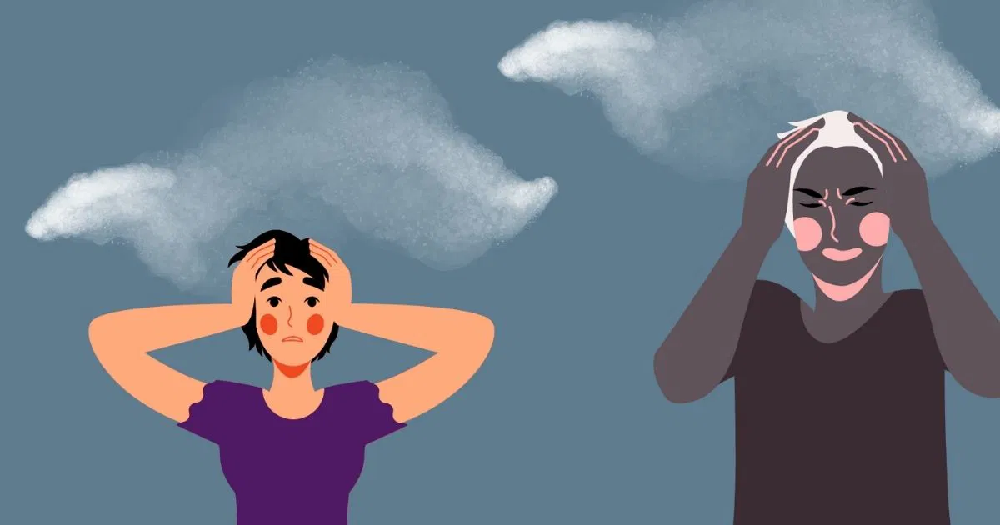
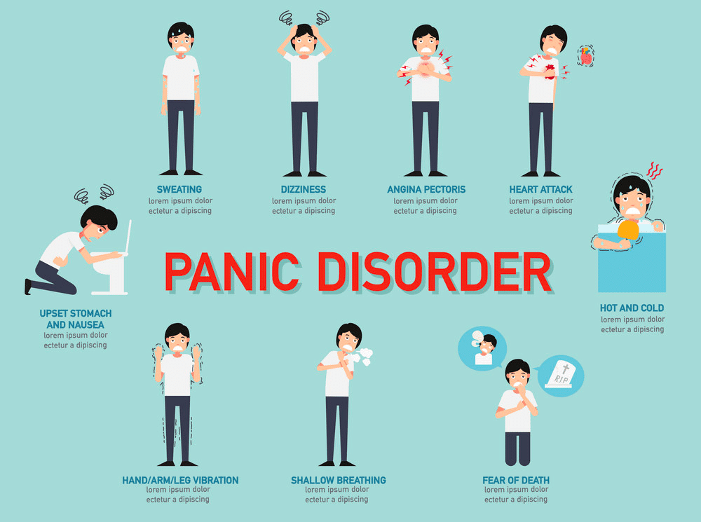
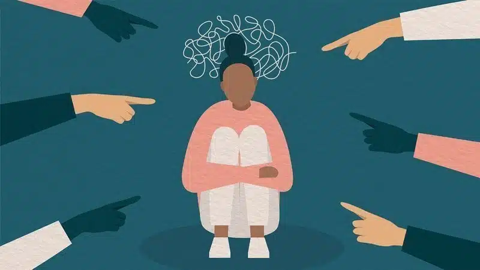
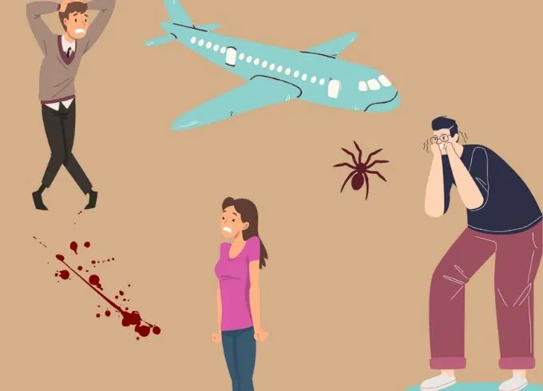
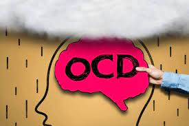
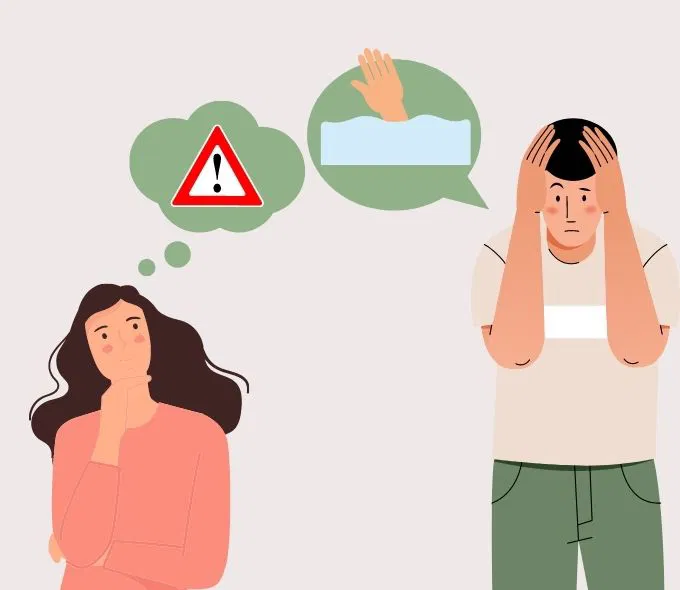
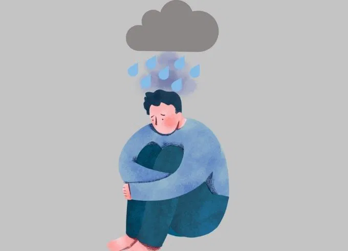
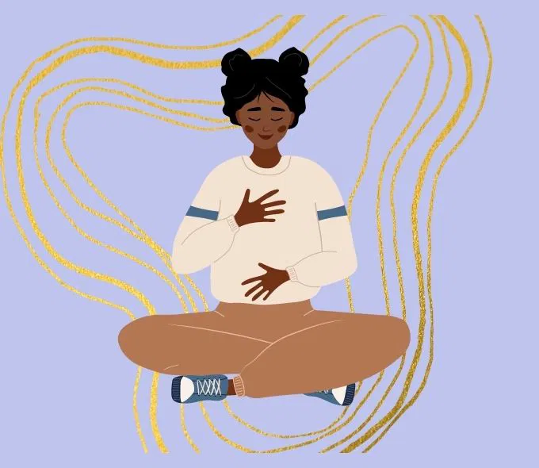

Anxiety is a common and natural response to stress or danger, often characterized by feelings of worry, fear, or unease. However, when these feelings become persistent, overwhelming, or disproportionate to the actual threat, they can develop into an anxiety disorder. Anxiety disorders are among the most prevalent mental health conditions, affecting millions of people worldwide. At Soothify, we aim to provide comprehensive support and resources for individuals struggling with anxiety disorders, helping them understand their condition and find effective treatment. This article explores the various types of anxiety disorders, their symptoms, and the available treatment options.
Anxiety disorders encompass a range of conditions, each with its distinct features and diagnostic criteria. Understanding these types can help in recognizing symptoms and seeking appropriate help.
Generalized Anxiety Disorder is characterized by excessive, uncontrollable worry about a variety of topics, including work, health, and social interactions. Individuals with GAD find it difficult to control their anxiety, which can interfere with their daily life.
• Persistent and excessive worry about multiple areas of life.
• Restlessness or feeling on edge.
• Fatigue and difficulty concentrating.
• Muscle tension and sleep disturbances.

Panic Disorder involves recurrent and unexpected panic attacks—intense periods of fear or discomfort that reach a peak within minutes. These attacks can be accompanied by physical symptoms that mimic those of a heart attack or other serious conditions.
• Sudden and intense feelings of fear or discomfort.
• Palpitations, sweating, shaking, or shortness of breath.
• Chills, nausea, or dizziness.
• Fear of losing control or dying during an attack.

Social Anxiety Disorder, also known as social phobia, is marked by an intense fear of social situations where one might be judged or scrutinized by others. This fear can lead to avoidance of social interactions and significant distress.
• Extreme fear of social or performance situations.
• Avoidance of situations where one may be the center of attention.
• Physical symptoms such as blushing, sweating, or trembling in social settings.
• Intense worry about being embarrassed or humiliated.

Specific Phobias involve an intense, irrational fear of a specific object or situation, such as heights, spiders, or flying. This fear can lead to avoidance behavior and significant distress when confronted with the phobia.
• Intense fear or anxiety about a specific object or situation.
• Immediate anxiety response when exposed to the phobic stimulus.
• Avoidance of the feared object or situation.
• Disproportionate reaction to the actual threat posed.

Obsessive-Compulsive Disorder is characterized by the presence of obsessive thoughts—persistent, intrusive thoughts that cause anxiety—and compulsive behaviors—repetitive actions performed to alleviate the anxiety caused by the obsessions.
• Obsessive thoughts that are persistent and distressing.
• Compulsive behaviors performed to reduce anxiety or prevent a feared event.
• Time-consuming rituals that interfere with daily life.
• Recognition that the obsessions and compulsions are excessive or unreasonable.

Post-Traumatic Stress Disorder can develop after exposure to a traumatic event. Individuals with PTSD experience distressing memories, flashbacks, and heightened arousal related to the traumatic event.
• Re-experiencing the traumatic event through flashbacks or nightmares.
• Avoidance of reminders related to the trauma.
• Persistent negative thoughts or feelings related to the trauma.
• Hyperarousal, including heightened alertness and irritability.

Anxiety disorders can present with a wide range of symptoms, varying in intensity and duration. Common symptoms across different types of anxiety disorders include:
• Excessive Worry: Persistent and overwhelming worry about various aspects of life, often accompanied by difficulty controlling the worry.
• Physical Symptoms: Symptoms such as increased heart rate, sweating, trembling, dizziness, or gastrointestinal issues.
• Restlessness: Feeling on edge, easily agitated, or unable to relax.
• Sleep Disturbances: Trouble falling asleep, staying asleep, or experiencing restless and non-refreshing sleep.
• Concentration Difficulties: Problems focusing or concentrating on tasks due to intrusive thoughts or excessive worry.
• Avoidance: Avoiding certain situations, places, or activities due to anxiety or fear.
• Panic Attacks: Sudden episodes of intense fear or discomfort, often with physical symptoms such as chest pain or shortness of breath.
The symptoms of anxiety disorders can significantly impact an individual’s quality of life, making it challenging to manage daily responsibilities, maintain relationships, or engage in enjoyable activities.
Effective treatment for anxiety disorders typically involves a combination of therapy, medication, and lifestyle changes. The goal of treatment is to reduce symptoms, improve functioning, and enhance overall well-being.
1. Cognitive Behavioral Therapy (CBT): CBT is one of the most effective treatments for anxiety disorders. It focuses on identifying and challenging negative thought patterns and behaviors that contribute to anxiety. Through CBT, individuals learn to develop healthier coping strategies and problem-solving skills.
2. Exposure Therapy: Exposure therapy is particularly useful for treating specific phobias and PTSD. It involves gradual and controlled exposure to the feared object or situation, helping individuals confront their fears and reduce their anxiety response over time.
3. Acceptance and Commitment Therapy (ACT): ACT helps individuals accept their thoughts and feelings rather than trying to control or avoid them. It emphasizes living in accordance with one’s values and developing mindfulness skills to manage anxiety.
4. Mindfulness-Based Stress Reduction (MBSR): MBSR incorporates mindfulness meditation and relaxation techniques to help individuals manage stress and anxiety. It encourages present-moment awareness and can improve emotional regulation.

1. Antidepressants: Medications such as selective serotonin reuptake inhibitors (SSRIs) and serotonin-norepinephrine reuptake inhibitors (SNRIs) are commonly prescribed for anxiety disorders. These medications can help balance neurotransmitters in the brain and reduce anxiety symptoms.
2. Anxiolytics: Anxiolytics, such as benzodiazepines, may be prescribed for short-term relief of severe anxiety symptoms. However, due to their potential for dependence and side effects, they are generally used with caution and for limited durations.
3. Beta-Blockers: Beta-blockers can help manage physical symptoms of anxiety, such as rapid heartbeat and shaking. They are often used for performance anxiety or to address acute symptoms.
1. Exercise: Regular physical activity can help reduce anxiety by releasing endorphins and improving overall mood. Activities such as walking, jogging, or yoga can be beneficial.
2. Healthy Diet: A balanced diet can support overall mental health and reduce anxiety symptoms. Avoiding excessive caffeine and alcohol, which can exacerbate anxiety, is also recommended.
3. Sleep Hygiene: Maintaining good sleep habits is crucial for managing anxiety. Establishing a regular sleep schedule and creating a relaxing bedtime routine can improve sleep quality and reduce anxiety.
4. Stress Management: Techniques such as deep breathing, progressive muscle relaxation, and mindfulness can help manage stress and reduce anxiety. Finding effective stress management strategies can enhance overall well-being.
At Soothify, we are dedicated to providing comprehensive support for individuals struggling with anxiety disorders. Our team of mental health professionals offers personalized therapy and counseling services designed to address the unique needs of each individual. We also provide resources and guidance on managing anxiety through lifestyle changes and self-care practices. Whether you are seeking therapy for anxiety, exploring medication options, or looking for support in managing daily stressors, Soothify is here to help. Our goal is to empower individuals to understand their anxiety, develop effective coping strategies, and lead fulfilling lives.
Anxiety disorders are complex conditions that can significantly impact an individual’s quality of life. By understanding the different types of anxiety disorders, recognizing their symptoms, and exploring available treatments, individuals can take proactive steps toward managing their condition. At Soothify, we are committed to supporting individuals on their journey to better mental health, offering resources, therapy, and guidance tailored to their needs. With the right support and treatment, it is possible to navigate the challenges of anxiety and achieve a sense of balance and well-being. Anxiety disorders, while challenging, are treatable conditions that can be managed with the right approach and support. Understanding the different types of anxiety disorders and recognizing their symptoms is crucial for seeking appropriate help and starting the journey toward recovery. At Soothify, we are dedicated to providing comprehensive support tailored to individual needs, offering evidence-based therapies, medication options, and lifestyle strategies to effectively manage anxiety. Effective treatment often involves a combination of therapy, medication, and lifestyle changes, all aimed at reducing symptoms and improving overall well-being. Additionally, support from loved ones and mental health professionals plays a vital role in the healing process. We believe that with the right tools and resources, individuals can gain control over their anxiety and lead fulfilling lives. Seeking help is a courageous step towards better mental health. At Soothify, we are committed to guiding you through this process with compassion and expertise, helping you build resilience and find balance. Remember, managing anxiety is a journey, but with support and the right approach, it is possible to achieve a more peaceful and fulfilling life.